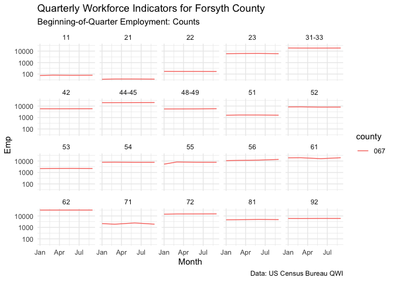

The goal of tidyqwi is to make accessing the US Census Bureau’s Quarterly Workforce Indicators easier in a tidy format. This package allows a user to specify the years and states of interest as well as some of the additional parameters (desired cross tabs, MSA vs county level data, firm size, etc) and submit them to the US Census API. This package then stays within the US Census guidelines for API submission for this data and returns a combined tidy dataframe for future analysis.
Installation
Install via CRAN with:
install.packages("tidyqwi")Or the development version at:
remotes::install_github("medewitt/tidyqwi")Use
After installation you can load and retrieve the desired data!
library(tidyqwi)
nc_qwi <- get_qwi(years = "2010",
states = "11",
geography = "county",
apikey = census_key,
endpoint = "rh",
variables = c("sEmp", "Emp"), all_groups = FALSE,
industry_level = "2", processing = "multiprocess")And look at your data:
head(nc_qwi)
#> # A tibble: 6 × 12
#> year quarter agegrp sex ownercode seasonadj industry state county Emp sEmp year_time
#> <chr> <chr> <chr> <chr> <chr> <chr> <chr> <chr> <chr> <chr> <chr> <date>
#> 1 2010 1 A00 0 A00 U 11 37 001 45 1 2010-01-01
#> 2 2010 1 A00 0 A00 U 11 37 003 101 1 2010-01-01
#> 3 2010 1 A00 0 A00 U 11 37 005 82 1 2010-01-01
#> 4 2010 1 A00 0 A00 U 11 37 007 207 1 2010-01-01
#> 5 2010 1 A00 0 A00 U 11 37 009 104 1 2010-01-01
#> 6 2010 1 A00 0 A00 U 11 37 011 77 1 2010-01-01And there are labels added if desired
labelled_nc <- add_qwi_labels(nc_qwi)
Hmisc::describe(labelled_nc$Emp)
#> labelled_nc$Emp : Beginning-of-Quarter Employment: Counts
#> n missing distinct Info Mean Gmd .05 .10 .25 .50 .75 .90 .95
#> 7345 411 2851 1 2018 3129 24 40 132 448 1550 4355 8099
#>
#> lowest : 0 1 3 4 5, highest: 65243 81884 82723 84038 84674
library(ggplot2)
library(dplyr)
#>
#> Attaching package: 'dplyr'
#> The following objects are masked from 'package:stats':
#>
#> filter, lag
#> The following objects are masked from 'package:base':
#>
#> intersect, setdiff, setequal, union
labelled_nc %>%
as_tibble() %>%
dplyr::filter(county == "067") %>%
ggplot(aes(year_time, Emp, color = county))+
geom_line()+
scale_y_log10()+
facet_wrap(~industry)+
labs(
title = "Quarterly Workforce Indicators for Forsyth County",
subtitle = attributes(labelled_nc$Emp)$label,
caption = "Data: US Census Bureau QWI",
x = "Month"
)+
theme_minimal()
#> Warning in vp$just: partial match of 'just' to 'justification'
Please note that the ‘tidyqwi’ project is released with a Contributor Code of Conduct. By contributing to this project, you agree to abide by its terms.